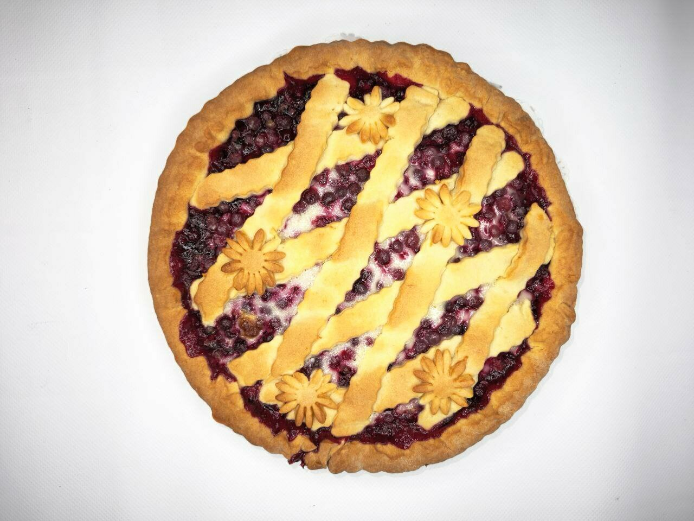
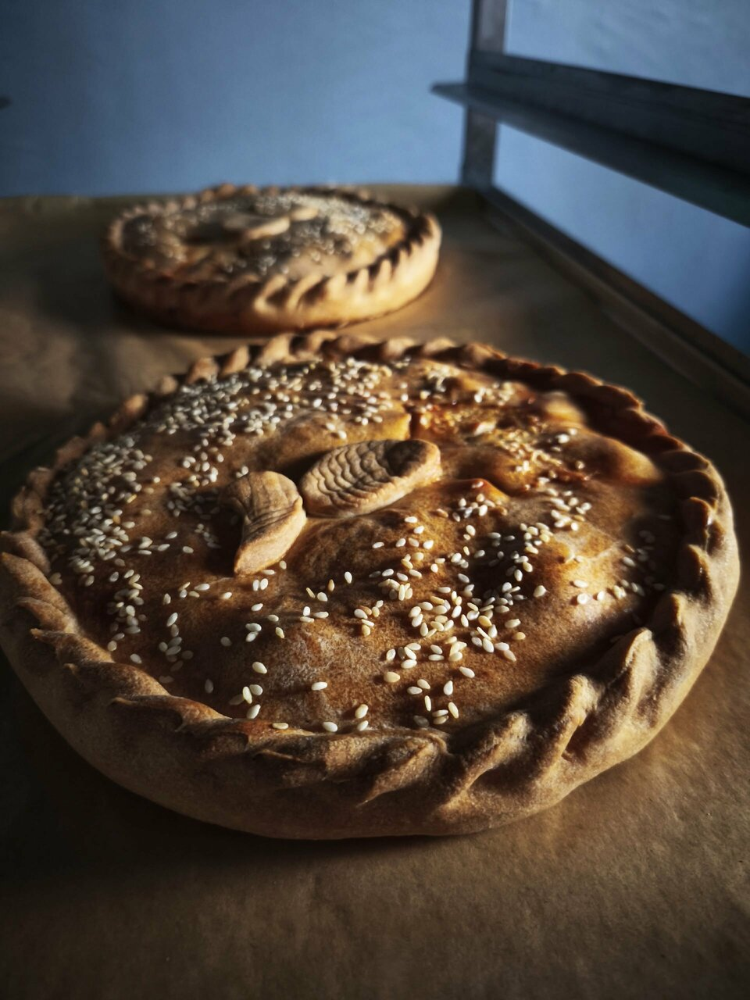
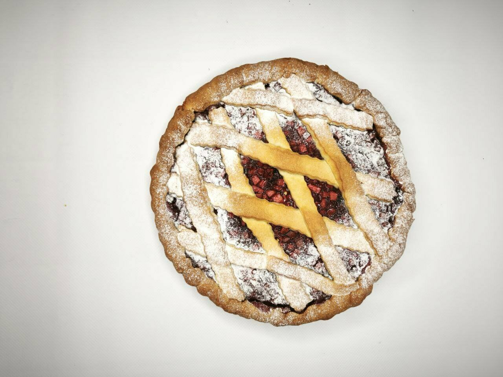
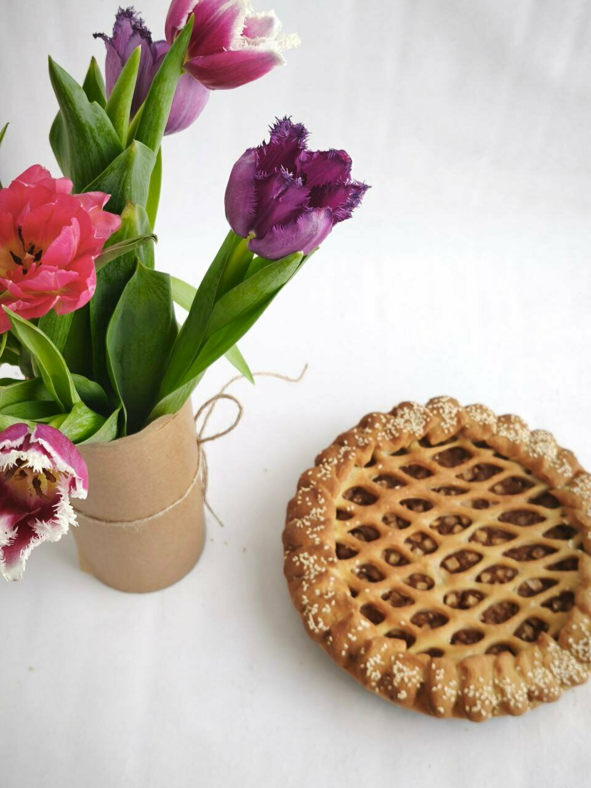
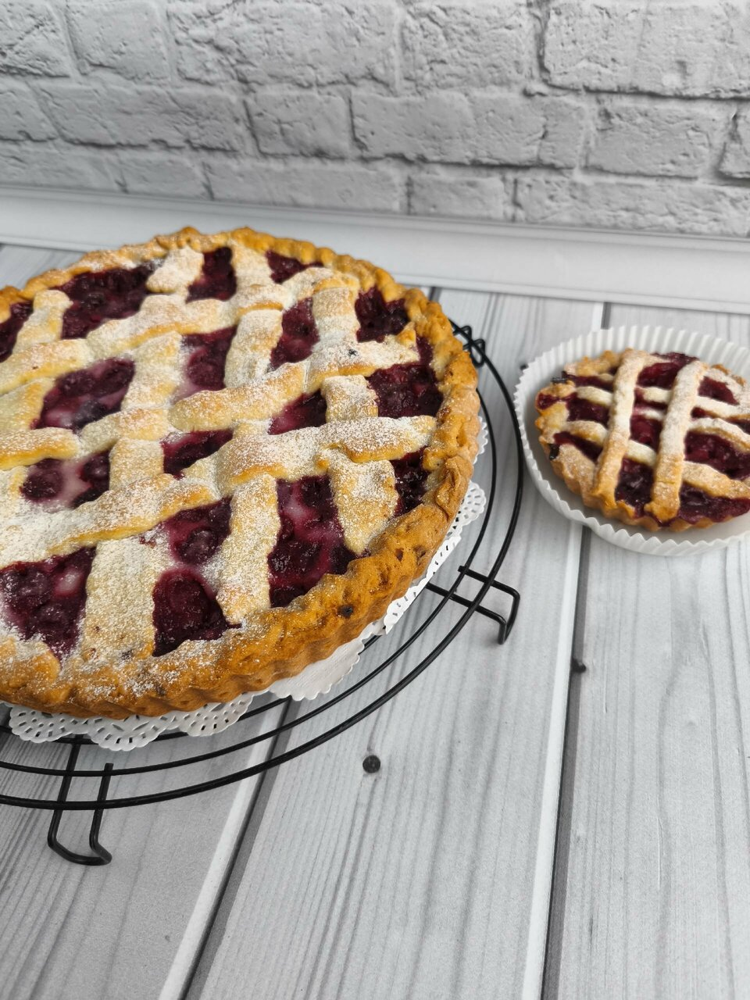
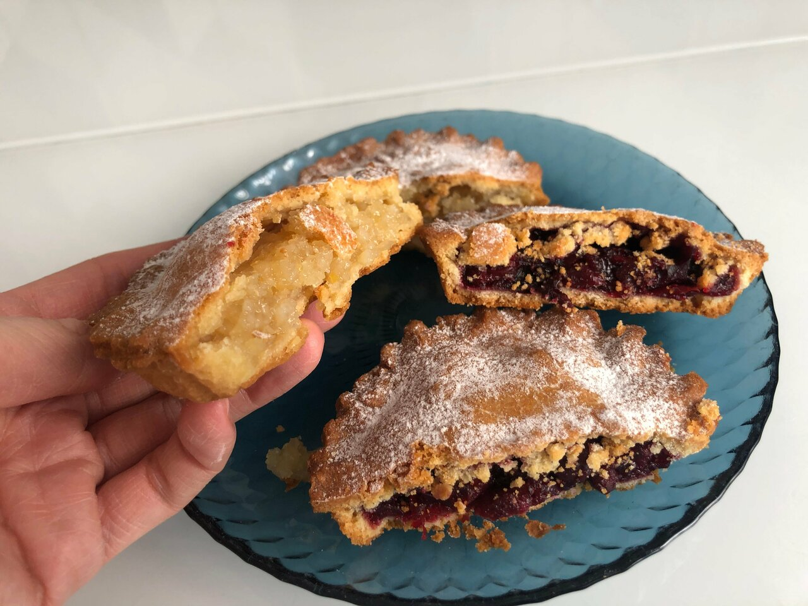
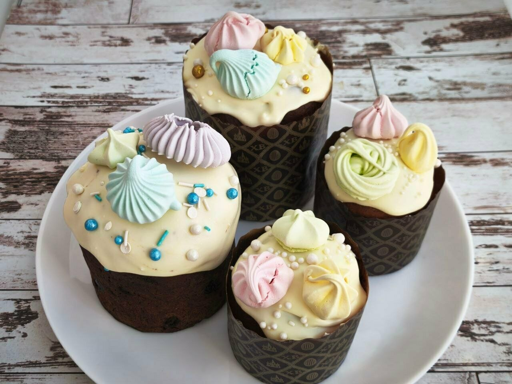

Для большой компании1 750 ₽*
Яблоко & брусника
Сладкий пирог с приятной ягодной кислинкой.
На семейный ужин, праздник или тот самый вторник, когда просто хочется вкусного. Печём сытные и сладкие пироги, а повод найдётся.

01 / Начните с этого
От большого пирога на компанию до маленького «мне, пожалуйста, два». Вот несколько позиций из опубликованного меню.

Сладкий пирог с приятной ягодной кислинкой.

Курица, картофель и лук под румяной корочкой.

Вишня в сметанном соусе и песочное тесто.
*Цены взяты из меню на Яндекс Картах. Уточняйте актуальную стоимость при заказе. Фотографии показывают работы пекарни и могут отличаться от конкретной позиции.
Всё меню
Повод не обязателен.02 / На ваш случай
В меню есть пироги к домашнему столу, мини-киши, пирожки и свадебный каравай. Расскажите, что планируете, и уточните детали заказа напрямую у пекарни.
Обсудить заказ в ВК03 / Без фильтров и обещаний
Настоящие кадры из фотогалереи Пироговой на Яндекс Картах. Каждый заказ может выглядеть по-своему — в этом и вкус ручной работы.



Пироги уже почти рядом
Пироговая · Новый Уренгой
Интернациональная, 2